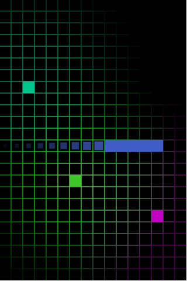

stdmatt's blog




We have a mole inside!
One agent is behind taking on each of our agents all over Europe. You must find out how is behind all this before he get all the pieces of the puzzle leading to you.
But it's not only wits, but also good infiltration skills! You will eventually sneak into invaded hideouts to recover important information.
Nice to know:- üèÜ Game awarded at the RetroZaragoza 2018 Homebrew contest.
- 2018
- MS-DOS, PC
- C, C++, Python, Shellscript.
- DJGPP (Compiler).
- SDL1.2, SDL2.0 (PC Renderers)

Simple Memory puzzle game made for children.
With 3 game challenging game modes and with a total of 45 levels, you have 135 stars to collect!.
Nice to know:- On this game I also made all the graphics artwork ;D
- 2018
- Android
- C++, Python, Shellscript.
- Cocos2d-x.
- Photoshop, Sprite Builder.